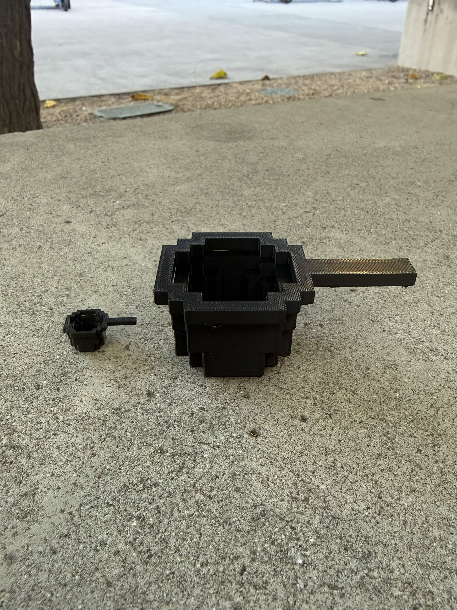
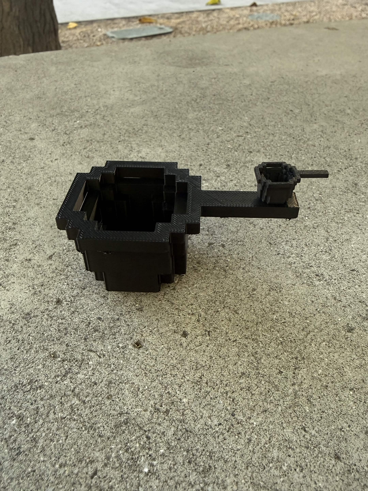

Yooo these are my 3D Prints! Aww don't they look so cute with each other!
These are my 3D prints of my tabo build from Minecraft! I'm pretty happy with how they turned out and I now have them displayed in my room! I wish I got to pick the vinyl color though, I wanted to paint them yellow for in-real life and in-game accuracy... #sad

